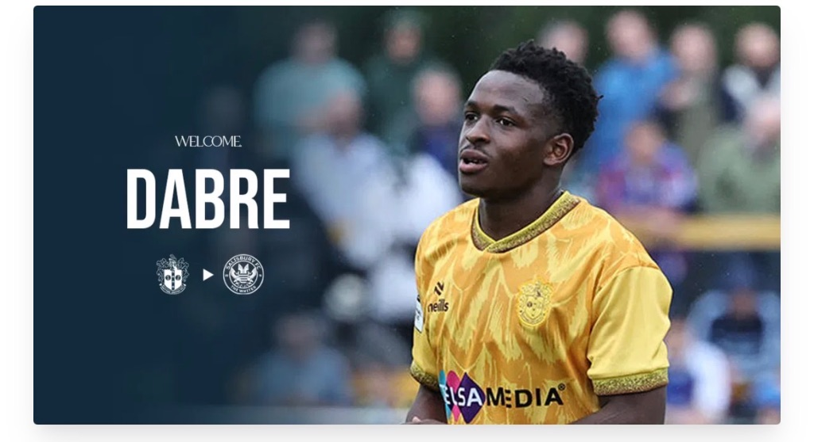
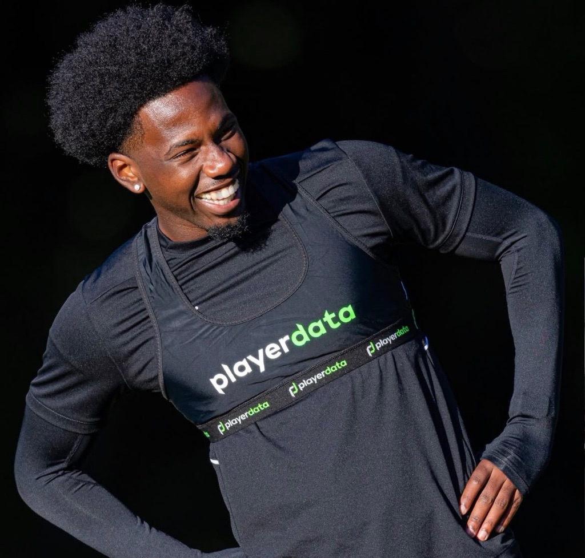
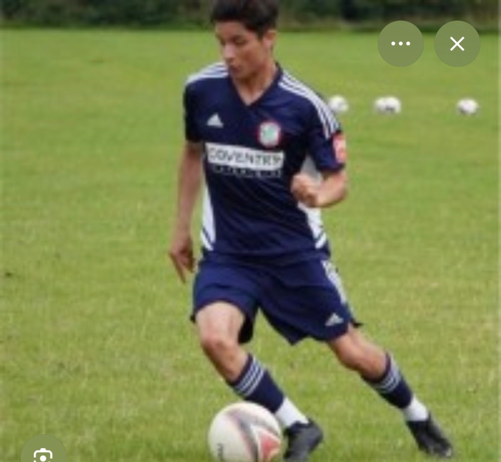
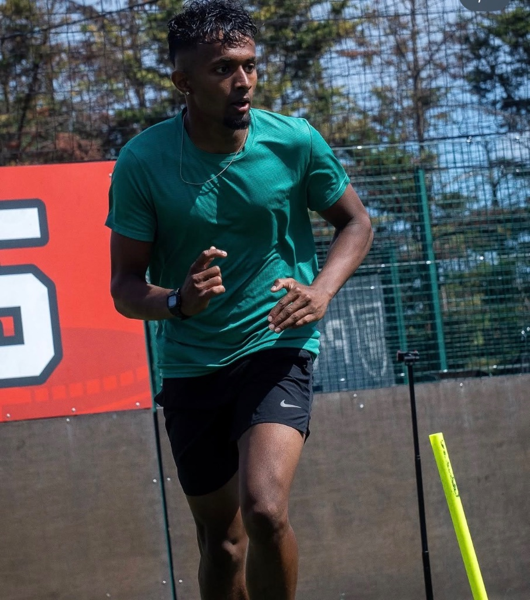
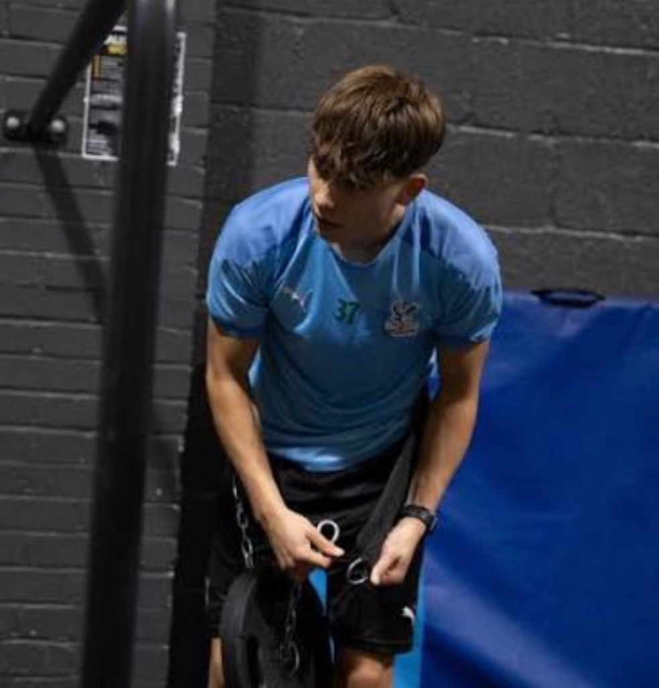

Football performance testing — Epsom, SurreyTeam days from £25 per player·Individual £70
The Intro — 1:55
IN MY OWN WORDS.
What I actually test, why the numbers matter more than how a player feels, and what happens between the first session and the re-test. The whole process, said straight — no sales pitch.
EducationMSc Performance Football Coaching — St Mary's University BSc Sport & Exercise Science — University of Bath
Playing PathScouted from Canada — Leatherhead FC · Aldershot Town U23s & reserves · University of Bath performance squad
LicenceFA Qualified Coach · Level 3 Personal Trainer
CoachingChelsea FC Foundation — U9–U10 development centres · LionHeart Football Academy Lead
50+
One-to-One Players — Last 2 Years
6
Teams Weekly
500+
Players Coached — 10 Years
MSc
Sport Science & Coaching
01 — The Testing
MEASURED LIKE A PRO.
A testing session puts numbers on your game — the same physical markers professional clubs use, run properly on the pitch, then turned into a plan you can act on.
Electronic timing · measured against age and position benchmarks · ages 8 to pro · venue and time agreed with you
01
SPRINT
What we time10m, 20m and 30m splits
What it tells youSeparates raw acceleration from top-end speed — and shows which one your game is missing.
02
AGILITY
What we timeChange-of-direction and reaction drills
What it tells youHow quickly you decelerate, plant and re-accelerate — the skill behind beating a man and defending one.
03
POWER
What we measureCountermovement jump height
What it tells youLower-body power output — the engine behind your first step, your leap and your duels.
04
ENGINE
What we measureAerobic capacity
What it tells youWhether you're still making those late runs in the 85th minute — or watching the game slow down without you.
Those are the headline four. The full M2FT battery goes deeper — and the detail is reserved for testing days.
For the Individual Player
YOUR NUMBERS. YOUR PLAN.
£70 per player · testing day + benchmarked report + your plan
The full battery — sprint, agility, power, engine — run in one properly-administered session
Your report: numbers against age and position benchmarks, strengths and gaps explained
A training plan built off your results — reviewed by Marco, not a template
Sprint technique analysed from video (with your consent) — knee drive, body lean, stride — AI-scored, reviewed by Marco
One cycle, six weeks long. Every block starts and ends with a number — so progress is measured, not guessed.
Day 0
01
Testing Day
Every athlete runs the full battery. We record their starting scores.
Within 2–3 days
02
Your Report
Every score laid out against age and position benchmarks, plus strengths, weaknesses and what to fix first.
Weeks 1–6
03
Your Programme
A six-week block built from your report and delivered through the platform. The athlete trains it, logs it and gets better.
£20/ month · platform access
End of week 6
04
Retest
Same tests, same conditions. The new numbers show what moved, and the next block is built from them.
Week 6 is a lighter week, so athletes retest fresh and fatigue doesn’t hide their gains.
↻ Retest feeds the next report — the cycle repeats every six weeks
Why six weeks?
Research on youth footballers shows measurable gains in sprint speed, jump height and strength from as little as four weeks of structured training. Six weeks gives those changes time to show clearly on retest, and is short enough that a growth spurt can’t take the credit. The study →
Every player is measured on the same four markers. What changes is what we do about them — a nine-year-old and a semi-pro should never be chasing the same numbers.
Age band
What we test
Where the work goes
What we don't chase yet
8–11Foundation
10m and 20m sprint, jump height, simple agility. Scored on technique as much as time.
Movement firstLanding, hopping, balance, coordination, first-step control — games-based, short, and fun.
Heavy loading, max-speed chasing, long conditioning blocks.
12–14Growth spurt
The full four, benchmarked to age band — not to the adult table.
Control under new limbsKnee and hip control, single-leg strength, adductor and hamstring work, landing mechanics, agility with body control.
Personal bests during a growth spurt — coordination dips first, then returns.
15–16Development
Full battery plus repeat-sprint response and video sprint technique.
Strength foundationsLoaded strength with technique held, plyometrics, repeated-sprint ability, and the first real engine work.
Specialising into one physical quality at the cost of the others.
17–18Performance
Full battery, position benchmarks, and a sprint profile against your positional demands.
Position-specific powerMax-velocity exposure, explosive power, repeat-sprint ability — balanced around the match calendar.
Extra volume in-season. Maintenance beats accumulation once fixtures pile up.
19–23Senior & semi-pro
Full battery with the benchmark you're actually judged against — your position, your level.
Your gap, not the averageWhatever the report says is missing — top-end speed, engine, or the power to win the duel.
Generic pre-season blocks that ignore what your numbers already show.
AdultAmateur & returning
Full battery, with load history and injury history taken into account.
Durability then outputEngine and tendon resilience first, then one honest sprint exposure a week so the legs cope with Saturday.
Testing day heroics off no training base — the number isn't worth the hamstring.
Not sure which band you're in? The report tells you where the player actually sits — not where the calendar says they should be.
PLAYERS MARCO HAS TRAINED.
50+ players coached one to one in the last two years — grassroots to Premier League and EFL, over ten years in the game. Testing days are the new part; the coaching isn’t.
Rio Cardines
Crystal Palace FC
"Highly recommend if you want to improve your ability and stay sharp."
Omari Mrisho
Huddersfield Town FC — Wing-Back
"Enjoyed the session and hopes to come back for more elite-level training."
Harry Lee
Salisbury FC
"Really great guy and coach — worked on really individual and specific things. Great energy and quality to the sessions."

Mohamed Dabre
Salisbury FC — First Team
"Trained with M2FT to develop my game and reach the professional level."
Jamu Iluya
FC Lehrte · Germany
"Slight cues that improve your game significantly with the slightest adjustment. The earlier you get work in with him in your career, the farther you propel yourself."

Jabari Ofosu-Hernandez
Bath University Performance Squad — Centre-Back
"M2FT conduct amazing 1-on-1 sessions. The attention to detail during sessions enables you to develop quickly and effectively."

Kelvin Hernandez
Holmesdale FC — Semi-Professional
“Marco is an amazing trainer. I’ve been working with him for the last couple of months and there honestly hasn’t been a single time where I haven’t enjoyed my session. You can see Marco is very passionate about his coaching and will always give 100% to make you better as a player. If you love football and want to get working with an amazing and fun coach, contact him instantly to get sessions underway. I promise, no regrets.”

Amaran Subramaniam
Semi-Professional — Striker
"Been training with Marco for a while now — he's a top coach. Great understanding of what he does and gets the best out of his clients."

Jack Low
Former Crystal Palace Academy · Fitness Influencer
★★★★★
Google Reviews
RATED ON GOOGLE.
Reviews from players, parents and clubs — straight from our Google profile.
The Work
THE WORK.
Sessions from the M2FT pitch — the training behind the numbers.
01 · Turf — ladder & cone footworkwith Rio Cardines & Jack Low
02 · Gym — medicine-ball power throwwith Harry Lee
03 · Gym — athleticism & balancewith LL Coaching
04 · Pitch — agility & reaction
05 · Pitch — power & change of direction
06 · Pitch — speed & agility
07 · Gym — plyometrics & landing
08 · Gym — single-leg strength
09 · Turf — horizontal force developmentwith LL Coaching · Player Performance Camp
You're not stuck with the numbers you have. The research is consistent — the right exercises and programming move sprint, power, agility and engine numbers. Even short sessions at home.
SPRINT
Meta-analyses of training interventions in footballers show consistent short-sprint improvements — acceleration is trainable, not just talent.
Most of these protocols fit in 15–20 minutes a day with a ball, a wall and a bit of floor. That's the homework a proper plan gives you — short, sharp, specific.
By Position
THE GAME DOESN'T ASK THE SAME THING OF EVERYONE.
WIDE DEFENDERS & MIDFIELDERS
The most very-high-intensity distance of any position — repeated sprints are the job description.
CENTRAL MIDFIELDERS
Constant acceleration, deceleration and repeat effort around the ball — engine and agility lead the profile.
DEFENDERS & STRIKERS
Central defenders and strikers live on duels and explosive actions — power and first-step quickness decide them.
AND THE BAR IS RISING
High-intensity running in the Premier League rose 24–36% across every position in just seven seasons. The study →
In Build — Launching Soon
YOUR NUMBERS. YOUR PROGRAMME.
Your six-week programme, built from your test numbers — matched to your position and your goal
Every exercise as a coached video — form, reps, sets
Sprint technique scored on video — knee drive, body lean, arm swing, stride — analysed with your consent, reviewed by Marco
Homework sized to your space, kit and calendar — 15–25 minutes a day, no gym needed
Retest and your programme rebuilds off the new numbers — progress you can see.
Screens from the build — launching soon. Players and parents get their view at launch.
Before you book
THE QUESTIONS PARENTS ASK.
What is actually tested on the day?
Four physical markers, run properly on grass or turf with electronic timing: sprint (10m, 20m and 30m splits), agility (change-of-direction and reaction), power (countermovement jump) and engine (aerobic capacity). Those four cover the physical qualities that decide football matches.
Who is it for — and does my child need to be a certain standard?
No standard required. Players are benchmarked against their own age band and position, not against a Premier League table — so a nine-year-old and a semi-professional get a fair readout from the same session. We test ages 8 to pro, from Sunday-league to EFL and Premier League.
Where does the testing happen?
Anywhere across Epsom, Surrey and the borders. There’s no fixed base — the venue and time are agreed with you when you book, and for team days we come to your ground.
What do we walk away with?
Individual: a benchmarked report on all four markers — where the player is strong, where the gaps are — plus a training plan built off those numbers and reviewed by Marco, not generated from a template. Sprint technique is analysed from video with your consent, then reviewed by Marco.
Team: every player benchmarked by age band and position, a squad readout for your coaching staff, and a training block your coaches can run.
Can a few friends book together instead of a whole club?
Yes. Team days are £25 per player with a minimum of ten — a group of friends, a grassroots squad or a school group all qualify. Individuals and small groups are £70 per player.
How do I book, and how quickly can we get in?
Message Marco on WhatsApp or email Marco@officialm2ft.com and he’ll confirm a date, a venue and what to bring — that’s the whole process. Usually 1–2 weeks.
PROVE IT ON THE PITCH.
Find out for yourself — message Marco on WhatsApp or email him, and get your testing day booked.